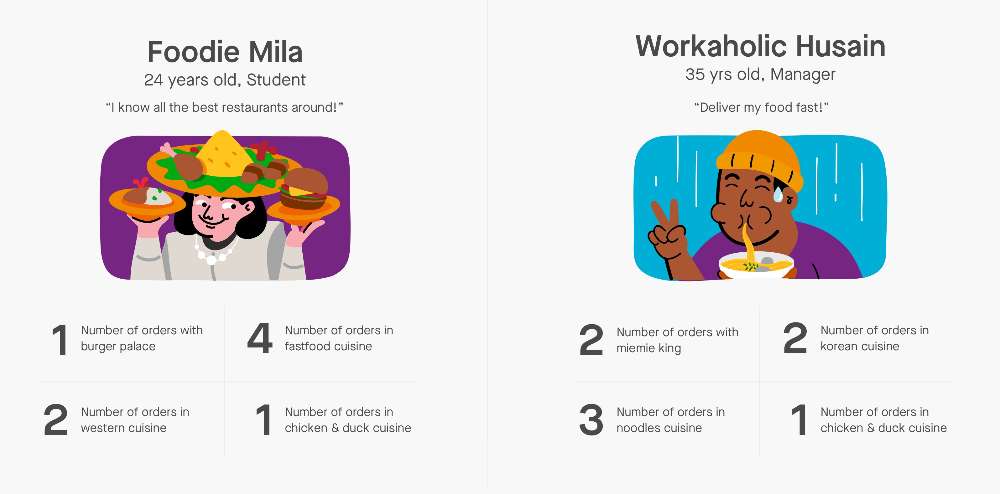
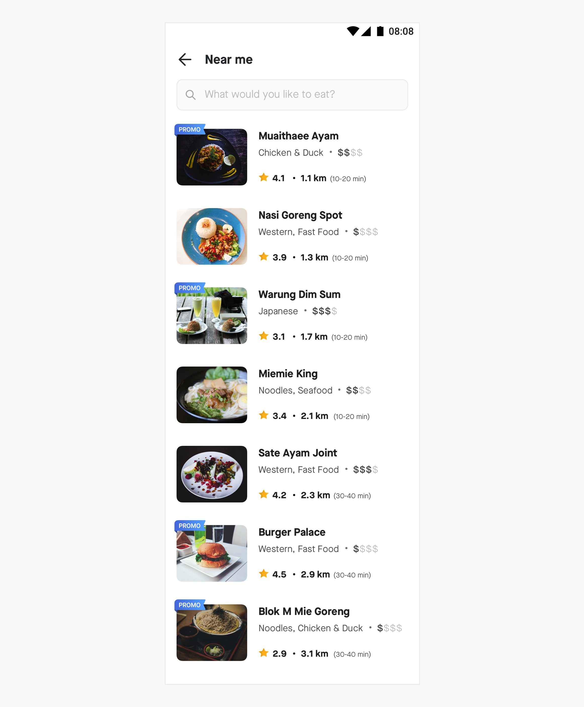
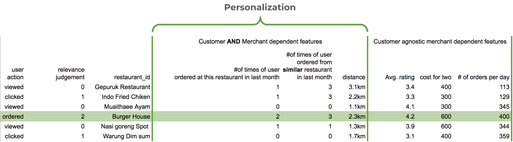
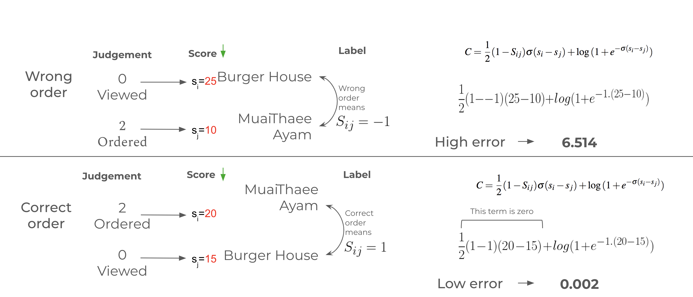
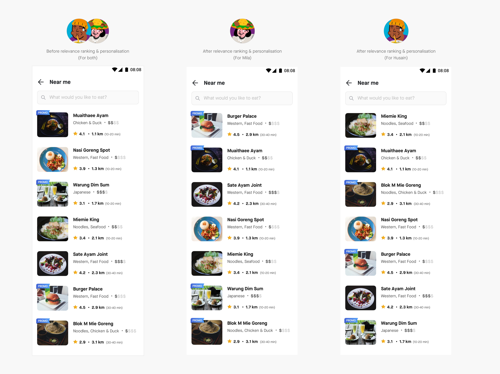

Written by - Jewel James
Are you looking for food? Thinking about burgers and crispy chicken fritters with creamy sauces sitting on a warm, soft bun? At least, that’s what I am thinking about. May be you’re different. Vegan perhaps? Or craving noodles? Each of us turn into a different person when we are hungry, and this is the story about how GoFood — Gojek’s food delivery service — helps you find the bite you crave.
At the core of the food ordering experience, sits search.
Searches are part of so many of our interactions on web and mobile, that we don’t even notice it anymore. This is mostly because modern search engines have matured to a point where they can deliver high quality results even if the entered query is a weak signal of the user’s intent. Even when weak, every query still contains a piece of the user’s intent.
In the case of GoFood, that piece is a fragment of our user’s hunger-driven brain.
In this post, we’ll discuss how we personalise the search results we surface on GoFood, based on the information we have about our users’ food preferences.
Let’s look at two of our GoFood users who have started feeling the pangs of hunger, and come online to check restaurants near them. Let’s look at two of our GoFood users who have started feeling the pangs of hunger, and come online to check restaurants near them.
They both open our app and click on the NEAR ME tile that lets users find the restaurants near them. We show them the nearest restaurants first, and this is what they both see.
This list goes on and on and will let them see each restaurant which is farther and farther away. They can now peruse the menus of each restaurant and pick one that serves what they feel like ordering. The problem is that they may spend some time scrolling and then leave the app without being able to make up their minds around which restaurant to place an order from. We have thrown too many choices at them and the cognitive effort of picking a restaurant and then a dish from the menu is too much work to make them suffer through.
But wait. Both Mila and Husain have transacted with us in the past, and we know a fair bit about their preferences.
To make this experience better, we decided to build a system that would let both of them see restaurants that suit their own tastes and preferences
Ranking documents for relevance works by assigning a prediction score to each document retrieved, which is directly proportional to its relevance. In the case of NEAR ME restaurant ranking this can be something like:
Relevance score = 2 * (1/distance) + 1.2 * rating of restaurant
Here in the relevance score calculation, we are taking weighted sum of different factors like (1/distance) and rating of restaurant. The coefficients/weights of these factors can be arrived at by experimenting with them and choosing weights that seem to maximise the ordering conversions. But, in the case of restaurant ranking in GoFood, we want to take into consideration many factors when deciding relevance. Unfortunately, experimenting with combinations of all those factors is impossible.
Enter Learning to rank. Here, the problem of deciding the rank of the restaurants shown to the user is formulated as a supervised machine learning problem.
If we look at past search, click, and ordering data, we will be able to assign relevance judgements to each restaurant listing according to whether our users clicked or ordered from one of those restaurants. Restaurants that attracted higher degrees of interest will be given higher degrees of relevance.
In the below example, a relevance judgement level of 0,1 and 2 is assigned to a restaurant according to whether the user viewed, clicked, or ordered from the restaurant in the search result. The relevance judgements are relative and only intent to be monotonically increasing with increasing relevance . They say that the restaurant which the user created an order from is more relevant than a restaurant the user merely checked out by clicking on it.They don’t mean that the restaurant which received the order is twice as relevant.
The values of each of the factors that could have played a role in the user’s decision of clicking or ordering is also shown against the restaurants.
An example of the training data user for creating the learning to rank model
Three of the factors/features in the above example are marked as ‘personalisation features’ because they would change according to the user’s previous order history and location. These will be the features that will be different between Mila and Husain because of the differences in the restaurants and cuisines they have ordered from before in the past.
These personalisation features are at the crux of creating personalised experiences for each user
Other customer agnostic features/factors like the rating, price range, and popularity of the restaurant are also listed here. GoFood has millions of such examples where users with different tastes made different decisions when shown a set of search results. These examples can now be used to create a dataset from which the learning to rank ML algorithm can create a model to decide how relevant a GoFood user would find a restaurant given that user’s location, order history and other restaurant statistics.
One way to approach this was as a point-wise ranking problem, wherein we try to predict the relevance judgement of each restaurant. Based on this, later we will predict the relevance judgement level and sort restaurants in decreasing order of predicted relevance score. This approach reduces learning to rank problem to a regression problem.
Another approach was to solve it is a pairwise ranking problem, wherein the ML model is trying to learn how to get the order of a pair of restaurants correct i.e if Restaurant A is more preferable to Restaurant B , the order (Restaurant A, Restaurant B) is correct and the order (Restaurant B, Restaurant A) is wrong.
For an ML model to be learned, we need an objective function that captures this pairwise ordering formulation . This is called a loss function or error function in ML and is the measure through which an ML model can assess how right or wrong its decision was. In pairwise ranking , this should be a function that becomes higher whenever the model misjudges a preference order and becomes lower when it is right about the preference order.
The loss/error function C is explained below:
When this function is minimised, the model is trying to predict a score for each restaurant such that the ranking of the order of the restaurants are close the relevance judgements the users made.
The pairwise formulation is a better approach here in comparison to the point-wise approach as it is looking to get the order of restaurants right and is not trying to estimate the relevance score themselves whose values were assigned only as markers to show how some restaurants were more preferred relative to others.
We used an implementation of the LambdaMART algorithm that learns to predict relevance scores so as to minimise this pairwise loss. You can think of this as a pursuit to find the decision tree that takes in all the parameters of the restaurant and gives out a score to the restaurant . This score should be assigned in such a way as to make the pair orders right.
Once this model is trained, it can be used during search, as explained in this post.
Now let’s go back to our beloved customers — Mila and Husain. The next time Mila or Husain looks for restaurants near them, the search results they see will be according to their preferences. This is because the model would look at the number of times they have ordered from each of the restaurants near them before. It would take their preferred cuisines and factors like restaurant ratings into account, and show them the restaurants that they would prefer to order from first.
The different search results Mila and Husain get after learning to rank is used to re-rank the results are shown below.
We ran an AB test using this formulation of learning to rank and observed a relative lift of 20% in search to ordering conversions and 23% improvement in NDCG. More information on how this metric is calculated here.
One interesting thing we observed as we started experimenting with this learning to rank model was personalising search results led to the average position at which the search to order conversions happen to be much higher on the list. This is because users were increasingly seeing the restaurants that they have some affinity towards and were able to make an ordering decision without scrolling much and without spending too much time being confused where to order from.